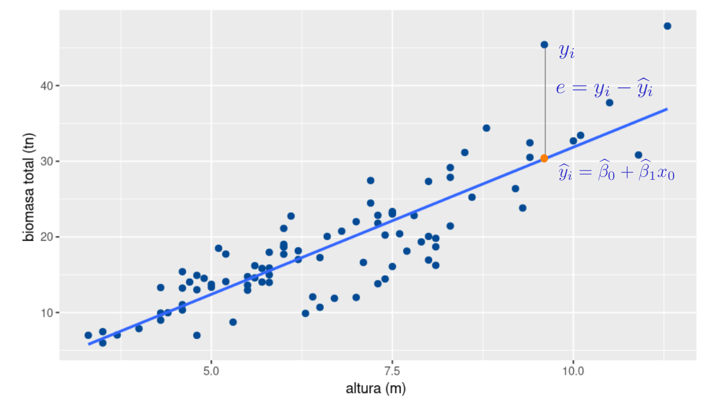

Este método se base en la selección de los dos valores que conformen la recta (intercepto y pendiente) que mejor se ajuste a los datos. Para ello debe dar solución a un sistema de ecuaciones, denominadas ecuaciones normales. A continuación se plantea como funciona el métodos
La diferencia entre el valor de \(y\) asociado con un valor de \(x_{0}\) y el valor estimado por la recta de regresión \(\widehat{y}_{0}\) se denomina resudual y constituye una muestra de la variable aleatoria \(\varepsilon\)
\[e_i = y_{i} -\widehat{y}_{i}\]
El método consiste en encontrar los valores de \(\beta_{0}\) y \(\beta_{1}\) que minimice la suma de los cuadrados de los residuales
\[SCE = \sum_{i=1}^{n} e_{i}^2 = \sum_{i=1}^{n} \big(y_{i} - \widehat{y}_{i}\big)^2 = \sum_{i=1}^{n} \big( y_{i} - \widehat{\beta}_{0} - \beta_{1} x_{i}\big)^2\]
El objetivo del método es:
\[\min SCE = \dfrac{\partial SCE}{\partial \beta_{0}} = 0\]
\[\min SCE = \dfrac{\partial SCE}{\partial \beta_{1}} = 0\]
\[\dfrac{\partial \hspace{.2cm} \sum_{i=1}^{n} \big( y_{i} - \widehat{\beta}_{0} - \beta_{1} x_{i}\big)^2}{\partial \beta_{0}} = -2 \sum(y_{i} - \beta_{0}- \beta_{1} x_{i}) = 0\]
\[\dfrac{\partial \hspace{.2cm} \sum_{i=1}^{n} \big( y_{i} - \widehat{\beta}_{0} - \beta_{1} x_{i}\big)^2}{\partial \beta_{1}} = -2 \sum(y_{i} - \beta_{0}- \beta_{1} x_{i}) x_{i} = 0\]
Constituyendo un sistema de dos ecuaciones y dos incognitas,
\[\sum_{i=1}^{n} y_{i} = n \widehat{\beta}_{0} + \widehat{\beta}_{1} \sum_{i=1}^{n} x_{i}\]
\[\sum_{i=1}^{n} y_{i} x_{i}= n \widehat{\beta}_{0} x_{i}+ \widehat{\beta}_{1} \sum_{i=1}^{n} x_{i}^{2}\]
Convirtiendose en el sistema :
\[ \begin{aligned} n \widehat{\beta}_{0} + \widehat{\beta}_{1} \sum_{i=1}^{n} x_{i} & = & \sum_{i=1}^{n} y_{i} \hspace{1cm}\text{(1)}\\ \widehat{\beta}_{0} \sum_{i=1}^{n} x_{i} + \widehat{\beta}_{1} \sum_{i=1}^{n} x_{i}^{2} & = & \sum_{i=1}^{n} y_{i} x_{i} \hspace{1cm}\text{(2)} \end{aligned} \]
De la ecuación \((1)\) se obtiene :
\[ \begin{aligned} \widehat\beta_{0} & = & \bar{y} - \widehat{\beta}_{1} \bar{x}\\ \end{aligned} \]
\[ \begin{aligned} \widehat\beta_{1} & = \dfrac{n \displaystyle\sum_{i=1} x_{i}y_{i} - \displaystyle\sum_{i=1}^{n} x_{i} \displaystyle\sum_{i=1}^{n} y_{i}}{n \displaystyle\sum_{i=1}^{n} x_{i}^{2} - \bigg(\displaystyle\sum_{i=1}^{n} x_{i}\bigg)^{2}} & \end{aligned} \]
Con el fin de estimar la relación existente entre el nivel de ingresos de una persona y el nivel de consumo, un investigador recolectó la siguiente información:
| id | 1 | 2 | 3 | 4 | 5 | 6 | 7 | 8 | 9 | 10 | 11 | 12 |
|---|---|---|---|---|---|---|---|---|---|---|---|---|
| Ing | 24.3 | 12.5 | 31.2 | 28.0 | 35.1 | 10.5 | 23.2 | 10.0 | 8.5 | 15.9 | 14.7 | 9.2 |
| Con | 16.2 | 8.5 | 15.0 | 17.0 | 24.2 | 11.2 | 15.0 | 7.1 | 3.5 | 11.5 | 10.7 | 9.2 |
Donde :
Id : identificador del hogar
x : Ingresos familiares
y : Consumo en viveres
id x y x2 y2 xy 1 24.3 16.2 590.49 262.44 393.66 2 12.5 8.5 156.25 72.25 106.25 3 31.2 15.0 973.44 225.00 468.00 4 28.0 17.0 784.00 289.00 476.00 5 35.1 24.2 1232.01 585.64 849.42 6 10.5 11.2 110.25 125.44 117.60 7 23.2 15.0 538.24 225.00 348.00 8 10.0 7.1 100.00 50.41 71.00 9 8.5 3.5 72.25 12.25 29.75 10 15.9 11.5 252.81 132.25 182.85 11 14.7 10.7 216.09 114.49 157.29 12 9.2 9.2 84.64 84.64 84.64 suma 223.10 149.10 5110.47 2178.81 3284.46
\[\widehat{\beta_{1}} = \dfrac{12
\times3284.46 - (223.10 \times 149.10)}{12 \times 5110.47 - (223.10)^2}
= \dfrac{6149.31}{11552.03} = 0.5323142 \]
\[\widehat{\beta_{0}} = 12.425 - 0.5323142 \times 18.59167 = 2.528392\]
Modelo estimado :
\[\widehat{y_{i}} =2.528392 + 2.528392 \hspace{.2cm} x_{i}\]
id <- 1:12
x <- c(24.3, 12.5, 31.2, 28.0, 35.1, 10.5, 23.2, 10.0, 8.5, 15.9, 14.7, 9.2)
y <- c(16.2, 8.5, 15.0, 17.0, 24.2, 11.2, 15.0, 7.1, 3.5, 11.5, 10.7, 9.2)
summary(lm(y~ x ))
Call:
lm(formula = y ~ x)
Residuals:
Min 1Q Median 3Q Max
-4.1366 -0.6996 0.2343 0.9959 3.0823
Coefficients:
Estimate Std. Error t value Pr(>|t|)
(Intercept) 2.52839 1.53789 1.644 0.131
x 0.53231 0.07452 7.143 3.13e-05 ***
---
Signif. codes: 0 '***' 0.001 '**' 0.01 '*' 0.05 '.' 0.1 ' ' 1
Residual standard error: 2.312 on 10 degrees of freedom
Multiple R-squared: 0.8361, Adjusted R-squared: 0.8197
F-statistic: 51.02 on 1 and 10 DF, p-value: 3.131e-05